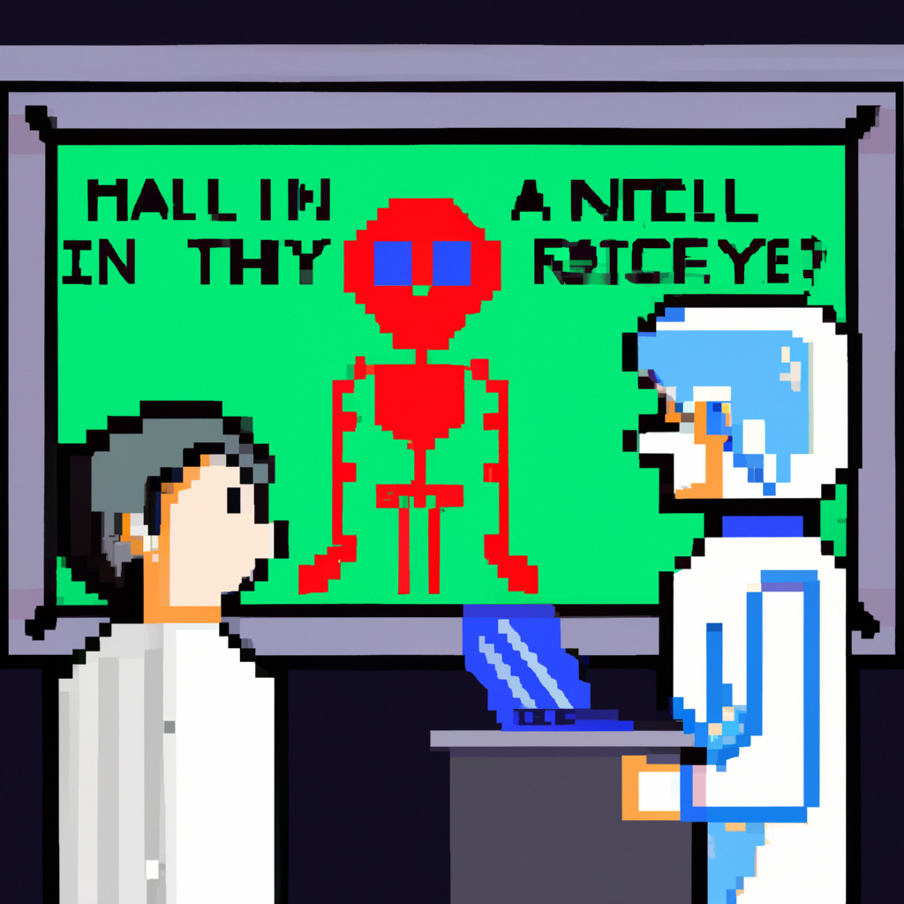

Why AI will never replace the radiologist
As a Python instructor and machine learning enthusiast, I have seen first-hand the incredible potential of AI in various industries. However, there is one field where I firmly believe that AI will never fully replace human expertise - radiology.
Radiology is a crucial aspect of modern medicine, allowing doctors to diagnose and treat diseases through imaging techniques such as X-rays, MRIs, and CT scans. With the rise of machine learning and its ability to analyze vast amounts of data, many have predicted that AI will eventually take over this field and remove the need for radiologists.
But as someone who has worked closely with both machine learning and radiologists, I can confidently say that this will never happen. Here's why:
1. The importance of human intuition
Radiologists are trained to not just interpret images, but also to use their intuition and clinical knowledge to make accurate diagnoses. They are familiar with the patient's medical history, previous scans, and symptoms, which all play a crucial role in the diagnosis. AI, on the other hand, lacks this human element and relies solely on data, which can sometimes lead to incorrect conclusions.
2. Error-prone algorithms
Machine learning algorithms are only as good as the data they are trained on. If the data is biased or incomplete, the AI will produce flawed results. In the case of radiology, this can be dangerous as it can lead to misdiagnosis and incorrect treatment plans. Radiologists, on the other hand, are trained to recognize and correct errors in imaging techniques, ensuring accurate diagnoses.
3. The need for emotional intelligence
Radiology is not just about interpreting images; it also involves working closely with patients and their families. This requires a level of emotional intelligence that AI simply does not possess. Radiologists not only provide patients with accurate diagnoses but also offer support and compassion during difficult times. AI will never be able to replicate this human connection.
4. Constantly evolving technology
Technology and medical imaging techniques are constantly evolving, and radiologists are at the forefront of this progress. They are always learning and adapting to new technologies, ensuring that they provide the best care for their patients. AI, on the other hand, is limited by the data it has been trained on and may struggle to keep up with these advancements.
While AI has its advantages, there are certain fields where human expertise and intuition will always be necessary. Radiology is one such field, where the combination of human intelligence and advanced technology produces the best results. So, rest assured, radiologists, your jobs are safe from AI for